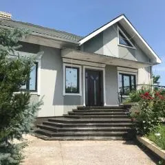
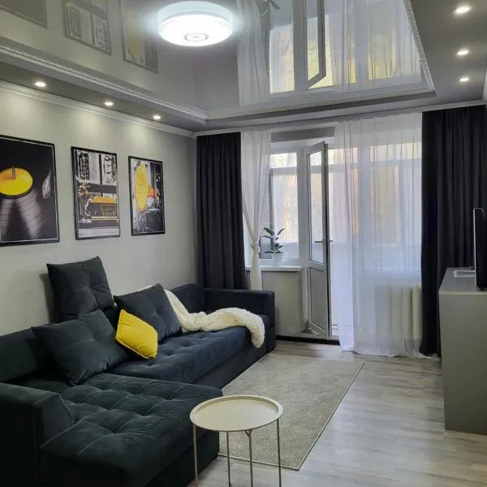

Locuri disponibile pentru cazare
White House Apart Hotel ★★★★☆

White House Apart Hotel se află în Bălți și pune la dispoziție o terasă. Se oferă la locație WiFi gratuit în toată proprietatea și parcare privată. Unitățile de cazare sunt moderne și bine echipate, oferind aer condiționat, televizor cu ecran plat, bucătărie complet utilată și baie proprie. Camerele sunt spațioase și confortabile, fiind potrivite atât pentru turiști, cât și pentru călătorii de afaceri. Oaspeții pot beneficia de o atmosferă liniștită și servicii de calitate, iar amplasarea hotelului permite acces rapid către principalele puncte de interes din oraș. De asemenea, în apropiere se găsesc restaurante, magazine și zone de agrement, ceea ce face șederea mai plăcută și convenabilă.
VisPas Bălți ★★★★☆

VisPas Bălți se află în Bălți și include o grădină, un lounge comun, o terasă și un bar. Acest hotel de 4 stele oferă depozit de bagaje. Oaspeții beneficiază de camere elegante, dotate cu aer condiționat, TV, minibar și baie privată. Hotelul pune la dispoziție și un restaurant unde pot fi servite preparate variate, precum și un mic dejun bogat în fiecare dimineață. De asemenea, sunt disponibile servicii de recepție deschisă nonstop, WiFi gratuit în întreaga proprietate și parcare pentru oaspeți. Atmosfera plăcută și serviciile de calitate fac din VisPas Bălți o alegere potrivită atât pentru relaxare, cât și pentru călătorii de afaceri.
Vip House & Terrace ★★★★★

Vip House & Terrace se găsește în Bălți și oferă unități de cazare cu aer condiționat, WiFi gratuit, terasă, vedere la grădină și parcare privată gratuită. Proprietatea pune la dispoziție camere confortabile și bine amenajate, ideale pentru relaxare și odihnă. Oaspeții se pot bucura de un ambient liniștit, spații verzi și facilități moderne care asigură un sejur plăcut. Datorită poziției sale, Vip House & Terrace permite acces ușor către centrul orașului și principalele puncte de interes din Bălți, fiind potrivit atât pentru turiști, cât și pentru vizite de afaceri.
Inna's House ★★★★☆

Inna’s House se găsește în Bălți și oferă WiFi gratuit și un balcon. Locația este potrivită pentru o ședere confortabilă, având camere luminoase și bine întreținute. Oaspeții se pot bucura de un spațiu liniștit, ideal pentru relaxare după o zi petrecută în oraș. De asemenea, apartamentul este dotat cu facilități esențiale precum bucătărie utilată, baie privată și zonă de relaxare, oferind condiții bune atât pentru sejururi scurte, cât și pentru șederi mai lungi.